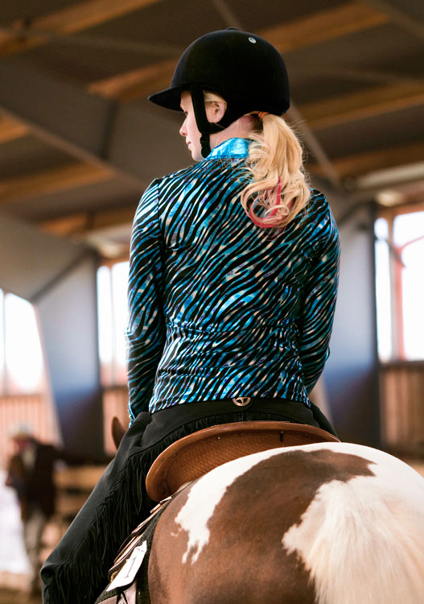

Presentation

Min familj och mina föräldrars kärlekshistoria
Min mor kommer från Holland, men flyttade till Sverige redan när
hon var 19 tillsammans med sin vän Else.
I Sverige började hon jobba på en plantage där hon träffade min far.
De blev förälskade men mamma trodde inte det skulle bli något långvarit förhållande
så hon flyttade tillbaka till Holland ett år senare. Men stackars Per(min far) saknade
henne väldigt mycket så han flyttade efter henne.
Men efter bara 6 månader i Holland visste de båda att Sverige var det landet
de ville leva i, så de flyttade tillbaka tillsammans.
I Sverige köpte de mina farföräldrars sommarhus i Höllviken, och där bodde dem tills de
blev gravida med mig. Då hyrde dem en lägenhet i Vellinge(staden jag bor i nu), sedan
köpte de mina farföräldrars hus en gång till! Detta huset var också det hus min far
växte upp i när min farfar hade en plantage på tomten. När vi köpte detta huset tog
också min far över farfars plantage och blev trädgårdsmästare. Ett 24 timmar om dygnet job,
som han arbetade hårt med att ha kvar. Men det tog för mycket på krafterna och till slut
la han ner företaget och började jobba med dammväxter utanför Malmö.
Tre år senare efter jag födds kom också min syster in i familjen.
Idag lever vi fortfarande i fars barndomshus, men vi har ersatt de nio stora växthusen
med hagar istället. Där "har vi gjort precis som Google!"(som pappa brukar säga) vi
har ersatt gräsklipparen med två getter. Vi har också tre katter, två degusar,
en kanin och en sommarhäst! Vi är väldigt stora djurälskare!
Våra djur
- Degusar
- Josef(bruna)
- Mer(gråa)
- Katter
- Melodi, 14 år och svart/vit
- Theodor(aka Tuder), 6 år och grå
- Florita(aka Minikisen), 3 år och igelkottsbrun
- Kanin
- Ruth, vit och väldigt arg
Mina största intressen
Jag har två stora intressen i mitt liv, det är hästar och styrketräning.
Jag har ridit hästar och älskat det sedan första gången jag satt
på en häst när jag var sex år. Jag och mina två tjejkompisar började
rida på en ridskola långt ute på landet, och våra föräldrar var tvugna
att köra den 1,25 h varje tisdag för att vi skulle kunna få rida.
Jag har ridit minst en gång per vecka enda sedan dess.
Idag rider jag och tävlar i något som heter Hunter, som är en
westerngren, på min fasters häst TC Impact In Cool Ice. Honom
skaffade vi för fyra år sedan och allt har varit en dröm sedan dess.
Vi började tävla på de små klubbtävlingarna inom en klubb som
heter WRIS(Western Ryttarna I Skåne). Mitt mål i min första tävling
var att inte bli diskad, men det blev jag. Sen har vi arbetat oss
upp och om några veckor ska vi iväg på Svenska Paint Championatet,
som är ett snyggare ord för SM i Painthästar(Paint är en hästras).
Sen skrev jag också att styrketräning är ett intresse. Jag
älskar att gå utanför min komfortbubbla, och det gör jag på gymmet.
Det är där jag rensar tankarna och lägger all min fysiska energi
på träningspasset.
Sedan jag började med styrketräning för
lite mindre än ett år sedan har jag
- Fått mycket mer energi
- Inga problem med att somna, och sova hela natten
- Fått mycket trevligare humör
Träningen har dessutom gjort att jag kan äta mer, jag som älskar mat!
Mina favorit saker
Mat, speciellt:
- Tacos
- Sötsaker
- Hemmakväll-godis
- Hallon/lakrits-glass
- Mammas lasange
Hemsidor
Detta är några hemsidor jag gillar: